The look and feel of Menu can be controlled by defining custom ItemLook instances in ItemLooks collection or by editing default ItemLook settings in DefaultItemLook and DefaultDisabledItemLook properties.
The Menu control provides pre-defined set of styles that can be applied to your control just on a click of the button. You can set the desired look and feel for the control that includes some popular styles too.
The Autoformat window can be opened by right clicking the control, and selecting the Auto Format... option opens the following Auto Format dialog box.
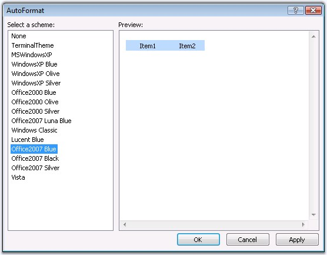
Figure 243
The leftpane lists the various pre-defined style schemes that are available. The right pane shows the preview of the currently selected scheme. Select the required style and click OK to apply the selected scheme to the control.
Example of a pre-defined look and feel
The following image shows the Menu with Windows XP style setting.
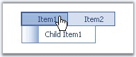
Figure 244
The new built-in format skins added for Menu are as follows.
· Office2007 Black
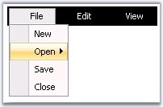
Figure 245
· Office2007 Blue

Figure 246
· Office2007 Silver
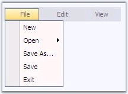
Figure 247
· Vista
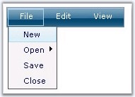
Figure 248
The ItemLooks Collection Editor contains Default properties that allows to set default look and feel to the control and its disabled state, and Custom properties that allows you to customize the look and feel accordingly.
The ItemLooks properties are as follows.
|
Property |
Description |
|
ID |
Specifies the id of the item looks settings. |
|
LeftImageHeight |
Specifies the height of the left image. |
|
LeftImageWidth |
Specifies the width of the left image. |
|
RightImageHeight |
Specifies the height of the right image. |
|
RightImageWidth |
Specifies the width of the right image. |
|
TextPaddingBottom |
Specifies the space in pixels around the label (text) for menu items.
|
|
TextPaddingLeft | |
|
TextPaddingRight | |
|
TextPaddingTop | |
|
StateDataDefault |
Specifies the various look and feel options for different states such as default, expand and hover. |
|
StateDataExpanded | |
|
StateDataHover |
ID specifies the id of the look. The text padding and the image height and width can be set for the tree nodes.
The StateDataDefault, StateDataExpanded and StateDataHover properties in ItemLook contains the following css class properties that defines the styles for the menu items.
|
Property |
Description |
|
ItemCSSClass |
Specifies the overall appearance and behavior of menu items. |
|
LeftImageCellCssClass |
Specifies the class name of the css definitions to use for the cell holding the image. |
|
LeftImageContainerCSSClass |
Specifies the class name of the css definitions to use for the container holding the left image. |
|
LeftImageCSSClass |
Specifies the class name of the css definitions to use for the left image. |
|
LeftImageURL |
Specifies url of the left image to be displayed on an item. |
|
RightImageCellCSSClass |
Specifies the class name of the css definitions to use for the cell holding the arrow image. |
|
RightImageContainerCSSClass |
Specifies the class name of the css definitions to use for the container of the arrow image. |
|
RightImageCSSClass |
Specifies the class name of the css definitions to use for the right image. |
|
RightImageURL |
Specifies url of the right image to be displayed on an item. |
|
TextCellCSSClass |
Specifies the class name of the css definitions to use for the cell holding the text. |
|
TextContainerCSSClass |
Specifies the class name of the css definitions to use for the container of the textcell. |
The styles can be applied to individual nodes by setting the id of the look to the Look and LookDisabled (for disabled nodes with Disabled property set to True) properties of the required menu items in the Designer dialog. This way the styles will be applied only to those items.
|
Property |
Description |
|
Look |
Specifies the look to be applied for the items. |
|
LookDisabled |
Specifies the look to be applied for the disabled items. |
See Also
Default Looks, Custom Looks, CSS Styles
Setting styles for Active and Disabled states
Menu comes with some default look and feels that can be applied just by assigning the styles. It also enables to set looks for items in active and disabled states. Styles applied for these states can be default styles or for the states like node expand and mouse hover.

Figure 249
The below sample code snippet define the styles to use for the items in active state on expanding the nodes, on mouse over and the default style settings for all the menu items.
|
<defaultitemlook id="Default Item Look">
<!-- StateDataExpanded - These default settings will be applied to the expanded menu items. --> <StateDataExpanded //blue//LeftImageCellCSSClass = "menuImgCell" RightImageCellCSSClass = "menuArrCell" ItemCSSClass = "menuPanelItem" RightImageContainerCSSClass = "menuArrCont" TextContainerCSSClass = "menuTextCont" TextCellCSSClass = "menuTextCell" //pink// LeftImageContainerCSSClass = "menuImgCont" RightImageCSSClass = "menuArr" //image// LeftImageCSSClass = "menuImg"></StateDataExpanded>
<!-- StateDataHover - These default settings will be applied to the menu item on hover. --> <StateDataHover LeftImageCellCSSClass = "menuImgCell" RightImageCellCSSClass = "menuArrCell" ItemCSSClass = "menuPanelItem" RightImageContainerCSSClass = "menuArrCont" TextContainerCSSClass = "menuTextCont" TextCellCSSClass = "menuTextCell" LeftImageContainerCSSClass = "menuImgCont" RightImageCSSClass = "menuArr" LeftImageCSSClass = "menuImg"></StateDataHover>
<!-- StateDataDefault - These default settings will be applied to all the menu items. --> <StateDataDefault LeftImageCellCSSClass = "menuImgCell" RightImageCellCSSClass = "menuArrCell" ItemCSSClass = "menuPanelItem" RightImageContainerCSSClass = "menuArrCont" TextContainerCSSClass="menuTextCont" TextCellCSSClass = "menuTextCell" LeftImageContainerCSSClass = "menuImgCont" RightImageCSSClass = "menuArr" LeftImageCSSClass = "menuImg"></StateDataDefault>
</defaultitemlook> |
See Also
We can easily customize the default look of the menu items. Custom Looks properties in ItemLooks Collection Editor allows you to apply custom looks to your menu items.
Using Designer
ItemLooks Editor lets you easily create the item looks for the items. If you create your own ItemLooks, then this will override the default looks.
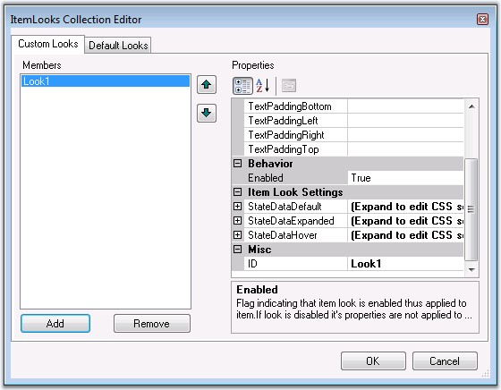
Figure 250
1. Give the css class names in the appropriate css styles.
79. Once you given the styles in the item look editor, in HTML view you can see the below code as shown below.
|
<cc1:Menu id="Menu1" runat="server" style="POSITION: absolute" ImageFilesPath="images" DynamicPanelCSSClass="menuPanel" StaticPanelCSSClass="menuRootPanel" CustomCSS="css/menuStyle.css"> <ITEMLOOKS> <cc1:MenuItemLook id="Look1"> <STATEDATADEFAULT ItemCSSClass="menuPanelItem"></STATEDATADEFAULT> <STATEDATAEXPANDED ItemCSSClass="menuPanelItem_Expanded"></STATEDATAEXPANDED> <STATEDATAHOVER ItemCSSClass="menuPanelItem_Hover"></STATEDATAHOVER> </cc1:MenuItemLook> <cc1:MenuItemLook id="Look2"> <STATEDATADEFAULT ItemCSSClass="menuRootPanelItem"></STATEDATADEFAULT> <STATEDATAEXPANDED ItemCSSClass="menuRootPanelItem_Expanded"></STATEDATAEXPANDED> <STATEDATAHOVER ItemCSSClass="menuRootPanelItem_Hover"></STATEDATAHOVER> </cc1:MenuItemLook> <cc1:MenuItemLook id="LookSep"> <STATEDATADEFAULT ItemCSSClass="menuSep"></STATEDATADEFAULT> </cc1:MenuItemLook> </ITEMLOOKS> </cc1:Menu> |
80. Set the Look ID to Look property of the menu item to apply the specified styles to the menu item.
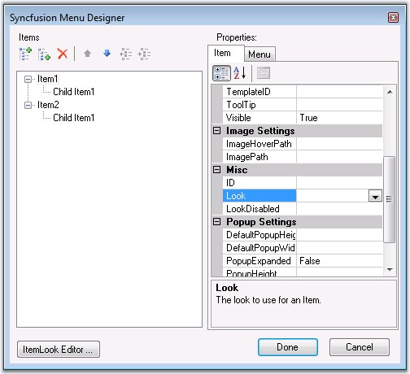
Figure 251: Designer image
Using Code
Unlimited number of ItemLooks can be created and added to the menu. Here we can see how the ItemLooks instance can be created and added programmatically. These ItemLooks can then be applied to the menu items.
|
[C#]
MenuItemLook look=new MenuItemLook(); look.ID="RootItemsLook"; look.StateDataDefault.ItemCSSClass="menuPanelItem"; look.StateDataExpanded.ItemCSSClass = "menuPanelItem_Expanded"; look.StateDataHover.ItemCSSClass = "menuPanelItem_Hover"; Menu1.ItemLooks.Add(RootItemsLook); MenuItem item= new MenuItem(); item.Text = "Essential Chart"; item.Look="RootItemsLook"; |
|
[VB]
Private look As MenuItemLook = New MenuItemLook() Private look.ID="RootItemsLook" Private look.StateDataDefault.ItemCSSClass="menuPanelItem" Private look.StateDataExpanded.ItemCSSClass = "menuPanelItem_Expanded" Private look.StateDataHover.ItemCSSClass = "menuPanelItem_Hover" Menu1.ItemLooks.Add(RootItemsLook) Private item As MenuItem = New MenuItem() Private item.Text = "Essential Chart" Private item.Look="RootItemsLook" |
See Also
The Menu control comprises of distinct segments for which css style definitions can be set. The default styles of the layered menu structure can be replaced with custom style settings by applying the css class names to the corresponding style properties.
Structure of Menu control
The menu structure consists of 2 panel-level and 1 item-level segments as shown in the below image. Static panel segment applies only for static menu which will have its items displayed by default. Dynamic panel segment applies only for dynamic menu, which will be expanded to display its items only on mouse over.
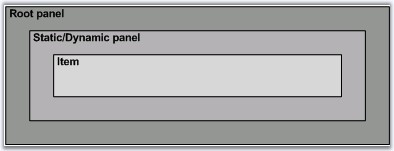
Figure 252: Structure of Menu control
The below table lists the panel-level segments and their corresponding CSS properties whose settings affect their styles.
|
Element |
Property |
Default Value (CSS Class Name) |
|
Root panel |
ControlRootCSSclass |
menuRoot |
|
Static panel |
StaticPanelCSSClass |
menuStaticPanel |
|
Dynamic panel |
DynamicPanelCSSClass |
menuDynamicPanel |
Customizing Menu Root-level segments
To customize the look and feel of one of the above segments, simply create a custom css style and associate it with the CSS-property corresponding to that segment.
Figure 253: Menu with css settings for the root elements
The css-properties set to the custom css values and the style definitions are shown below.
|
Property |
Value (Custom CSS Class Name) |
|
ControlRootCSSclass |
RootElementCSS |
|
StaticPanelCSSClass |
RootPanelElementCSS |
|
[Css Styles]
.RootElementCSS { padding:20px; background-color:#333365; }
.RootPanelElementCSS { padding:20px; background-color:#f6f9ff; } |
Structure of the menu item
A single menu item is segregated into different image and text sections, the look for all of which can again be controlled through their corresponding css-property settings. An item consists of a text and optionally an image that could be placed either to the left or to the right of the text.
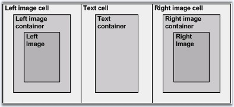
Figure 254: Structure of a menu Item
The below table lists the item-level segments and their corresponding CSS properties whose settings affect their styles.
|
Element |
Property |
Default Value (CSS Class Name) |
|
Left image cell |
LeftImageCellCSSClass |
menuImgCell |
|
Left image container |
LeftImageContainerCSSClass |
menuImgCont |
|
Left image |
LeftImageCSSClass |
menuImg |
|
Text cell |
TextCellCssClass |
menuTextCell |
|
Text container |
TextContainerCssClass |
menuTextCont |
|
Right image cell |
RightImageCellCSSClass |
menuArrCell |
|
Right image container |
RightImageContainerCSSClass |
menuArrCont |
|
Right image |
RightImageCSSClass |
menuArr |
Customizing Menu Item-level segments
The following section shows some custom styles applied on the different item-level segments and a screenshot of the resulting look.
|
Image |
Property |
Custom CSS Style |
CSS Definition |
|
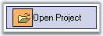
Menu with style settings for left image |
LeftImageCellCSSClass |
menuImgCell |
.menuPanelItem .menuImgCell { background-color:#FFBB6F; border:1px solid black; margin:2px; } .menuPanelItem .menuImgCont { margin:2px; } .menuPanelItem .menuImg { width: 20px; height:18px; } |
|
LeftImageContainerCSSClass |
menuImgCont | ||
|
LeftImageCSSClass |
menuImg | ||
|
Menu with style settings for right image |
RightImageCellCSSClass |
menuArrCell |
.menuPanelItem .menuArrCell { background-color:#FFBB6F; border:1px solid black; margin:2px; } .menuPanelItem .menuArrCont { margin:2px; } .menuPanelItem .menuArr { width: 20px; height:18px; } |
|
RightImageContainerCSSClass |
menuArrCont | ||
|
RightImageCSSClass |
menuArr | ||
|
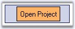
Menu with style settings for text |
TextCellCssClass |
menuTextCell |
.menuPanelItem .menuTextCell { font-family:MS Sans Serif; font-size:12px; width: 100%; } .menuPanelItem .menuTextCont { background-color:#FFBB6F; border:1px solid black; padding:5px; } |
|
TextContainerCssClass |
menuTextCont |
See Also
ItemLook Settings, Image Settings